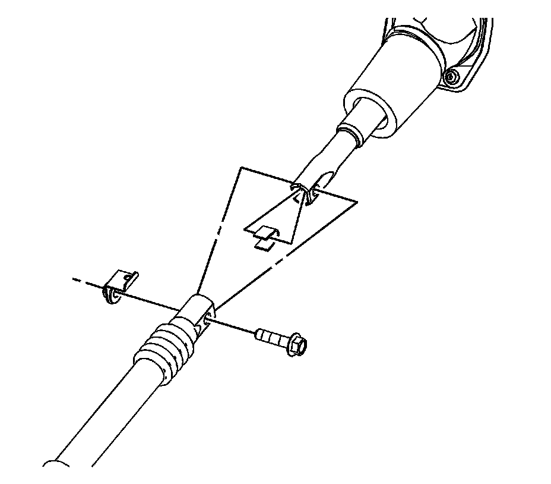

Upper Intermediate Steering Shaft Replacement
Upper Intermediate Steering Shaft Replacement
Tools Required
J 42640 Steering Column Anti-Rotation Pin
Removal Procedure

Notice: The wheels of the vehicle must be straight ahead and the steering column in the LOCK position before disconnecting the steering column or intermediate shaft from the steering gear. Failure to do so will cause the SIR coil assembly to become uncentered, which may cause damage to the coil assembly.
1. Install the J 42640 in the steering column lower access hole.
Important: Mark the relationship of the intermediate shaft components in order to assure proper installation.
2. Mark the relationships of the following components:
^ Mark the relationship of the bolt and clamp at both ends of the upper intermediate shaft.
^ Mark the relationship of the upper intermediate shaft to the lower intermediate shaft.

3. Remove the upper intermediate shaft to lower intermediate shaft pinch bolt and nut.
4. Separate the upper intermediate shaft from the lower intermediate shaft.
5. Remove the intermediate shaft seal retaining nuts.
6. Remove the intermediate seal.

7. Remove the upper intermediate shaft pinch bolt and nut from the steering column.
8. Separate the intermediate shaft from the steering column.
9. Remove the upper intermediate shaft from the vehicle from under the hood.
Installation Procedure
Important: If you are installing the same shaft, align the marks and the relationship of the bolt and clamp made during the removal procedure.
1. Install the lower end of the upper intermediate shaft through the bulkhead.
2. Connect the upper intermediate shaft to the steering column.
Notice: Refer to Fastener Notice.
Important: The intermediate shaft pinch bolt is held by a keeper and not to be tightened. To obtain proper torque, tighten at the intermediate shaft nut.
3. Install the intermediate shaft pinch bolt and nut.
Tighten the intermediate shaft pinch nut to 62 N.m (46 lb ft).
4. Position the intermediate shaft seal over the shaft.
5. Install the intermediate shaft seal nuts.
Tighten the nuts to 3 N.m (27 lb in).
6. Connect the upper intermediate shaft to the lower intermediate shaft.
Important: The upper intermediate shaft to lower intermediate shaft pinch nut is held by a keeper and not to be tightened. To obtain proper torque, tighten at the pinch bolt.
7. Install the upper intermediate shaft to lower intermediate shaft pinch bolt and nut.
Tighten the bolt to 50 N.m (37 lb ft).
8. Remove the J 42640 from the steering column lower access hole.